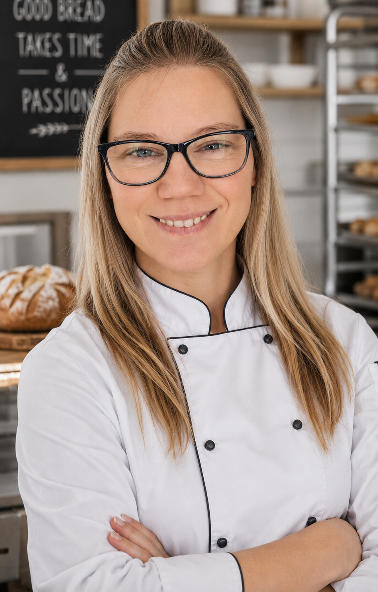

Professional Baker
“I take pride in creating high-quality baked goods with consistency, attention to detail, and a strong work ethic developed through years of experience in fast-paced bakery and production environments.”
About Me
Passionate Baker with Fast-Paced Production Experience
Location: London, SW18, United Kingdom
Email: joanna.mymob@gmail.com
Professional Profile
Passionate and reliable baker with hands-on experience producing high-quality baked goods in fast-paced food production environments. Skilled in bakery operations, food preparation, kitchen organisation, and maintaining high standards of hygiene and food safety.
A strong team player with excellent attention to detail and the ability to work efficiently under pressure. Experienced in supporting daily operations, stock control, and maintaining consistent product quality.
Key Skills
Work Experience
Baker — Gail’s Bakery
Earlsfield, London | Oct 2023 – Present- Produce high-quality baked goods and pastries.
- Maintain consistency and presentation standards.
- Support efficient daily bakery operations.
- Follow strict food hygiene and safety procedures.
Grab Crane Driver / Multi-Skilled Operative
Cory - ALS Managed Services Ltd | Feb 2017 – Oct 2023- Operated heavy machinery in industrial environments.
- Maintained safety and operational standards.
- Supported plant and waste transfer operations.
Catering Assistant & Cook
Cactus Poland — Chorzów, Poland | May 1999 – Aug 2008- Prepared salads, soups, main meals, and baked products.
- Supported daily kitchen operations in a fast-paced environment.
- Maintained cleanliness, hygiene, and food safety standards.
- Developed practical experience in catering and hospitality service.
Education
South Thames College
English Language Course
London, United Kingdom
Complex of Gastronomy and Service Schools
Vocational Diploma in Catering & Food Service
Chorzów, Poland
Additional Information
- Full right to work in the UK under the EU Settled Status Scheme
- Experienced in fast-paced hospitality and production environments
- Strong understanding of workplace hygiene and food safety standards